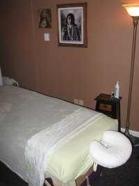
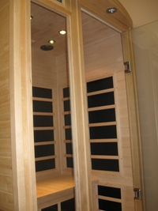
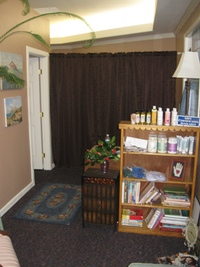

Jo's Healing Hands LMT
Joanne Mitchelle is a Licensed Massage Therapist with a compassionate touch. She is also licensed in Geriatric Massage. Located in Scenic LaConner. You will leave feeling good inside and out. Joanne has been working in LaConner since 2003.
Joanne was the first massage therapist to work with hospice patients at Skagit Hospice where she helped them create a comfort therapy program. She has many years of training & work with people who have cancer, Alzheimer's, strokes, Parkinson's, & fibromyalgia as well as both terminally ill and surgery recovery patients. She is also a member of AMTA. Joanne is also CPR and first aid certified.
Services and Rates
Joanne Mitchelle is a Licensed Massage Therapist specializing in:
- Swedish relaxation massage: which improves circulation & increases relaxation.
- Deep Tissue / Therapeutic massage: focuses on specific areas to help release tight & sore muscles.
- Reiki / Energy work: helps to relax & balance your spirit
- Cranial - Sacral Therapy: deep listening to and gentle manipulation of the cranio-sacral system
- Kinesio Taping: which was developed in Japan and acts as a support in areas of pain and/or dysfunction
- Cupping: with glass cups to bring more circulation to a specific area of pain
A combination of techniques can also be chosen to benefit your healing process. All massages include hot rocks and hot towels.

| $65.00 | 1 hour |
| $95.00 | 1 1/2 hours |
| $35.00 | 1/2 hour |
| $15.00 | 15 minute chair massage |
Monday, Wednesday, Thursday, & Sunday and I can be flexible
Gift certificates available
A 3 hour package is also available for $180
Available for Events
- Weddings
- Parties
- Special Occasions
- Retreats
- Other Gatherings
Far–Infrared Sauna

Also available is a far–infrared dry sauna. It is:
- a heat therapy room
- detoxifying for the body
- for burning calories
- rays of sunshine
- a relaxation wind down at the end of a stress-filled day
- a pre warm up before a massage
Up to 20 minutes free with 1 hour massage.
Sauna only (20 minutes): $10.00
Testimonials
I go every other week for an hour massage. "Healing Hands" says it all. I am 80 years old. Jo makes me feel relaxed, less anxious, and younger than my years.
-William L. Malcomson

I always feel like I am being so well taken care of while I am getting a massage from Jo.
-Elizabeth
Jo is a sensitive, caring massage therapist. Blessed with wonderfully skillful hands. I would recommend anyone to her care.
-June N. Didier
Contact
Jo's Healing Hands is located in the Cross Roads building at:
125 Washington st
LaConner, WA
The Cross Roads building offers many other services:
- Rene is another massage therapist
- Liz & Company does hair
For more information or to book an appointment call (360) 708-2022